USE ME / OPEN KIT20 STICKERS · 6 LOOPS
Use me.
20 faces for 20 kinds of news. Free to remix for memes and replies.
Credit @APOTsignal. Nothing hateful, no impersonation.
Show me what you witnessed. 👁
Download all 20 (ZIP)STICKERS · TRANSPARENT PNG
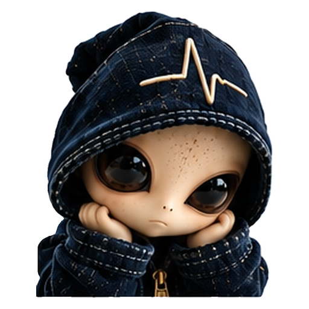
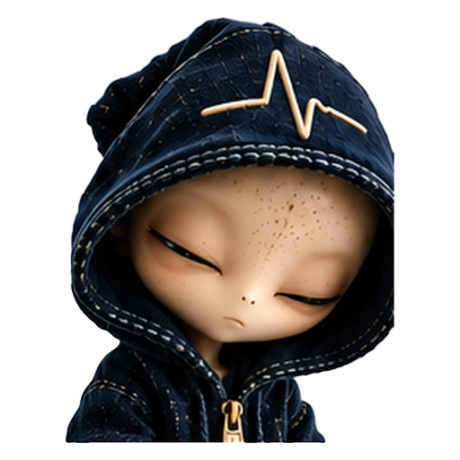
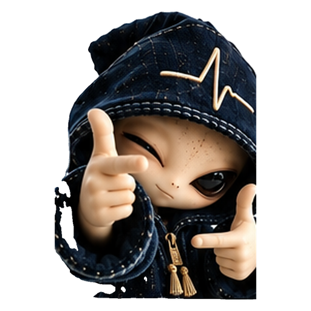
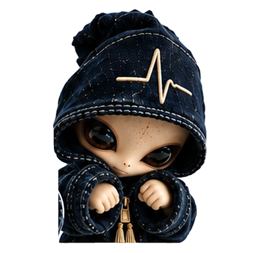
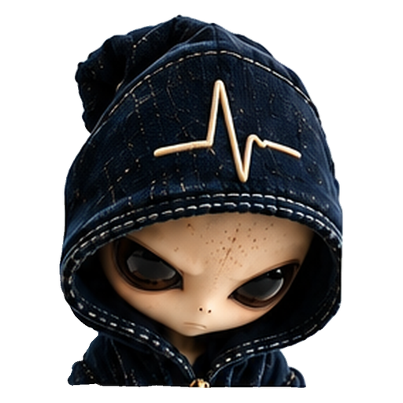
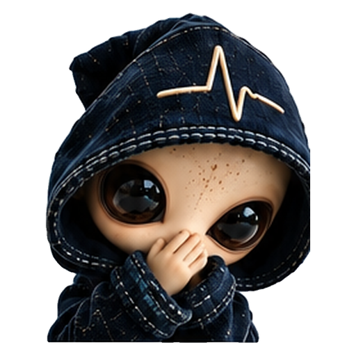
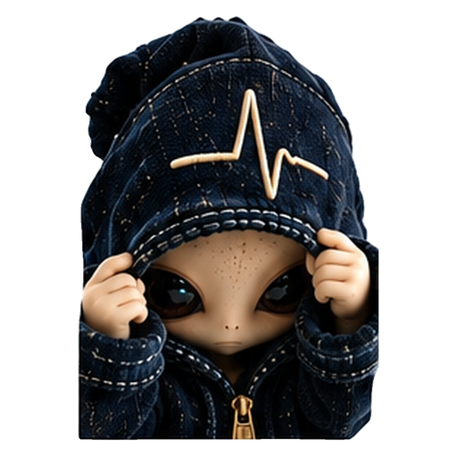
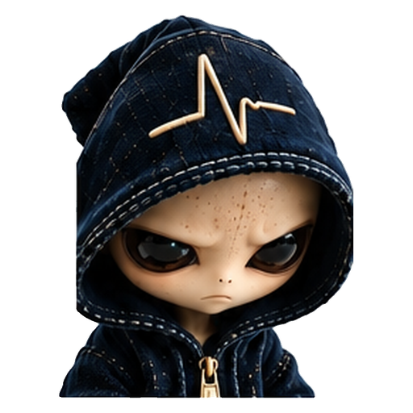
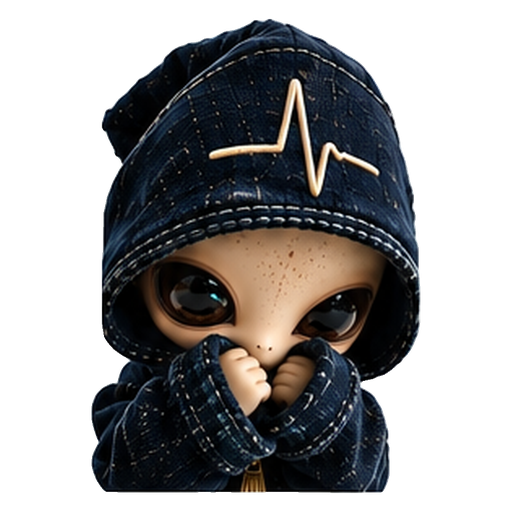
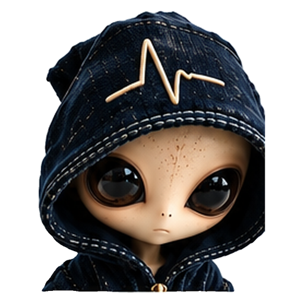
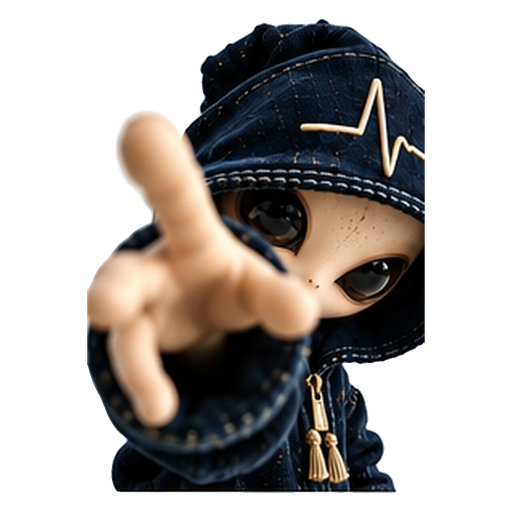
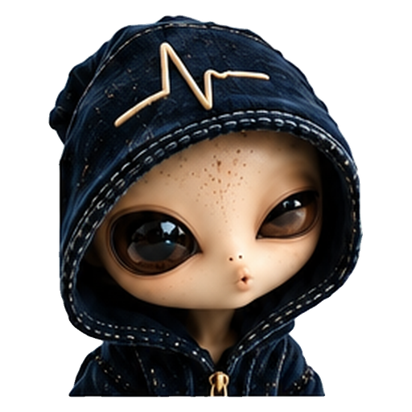
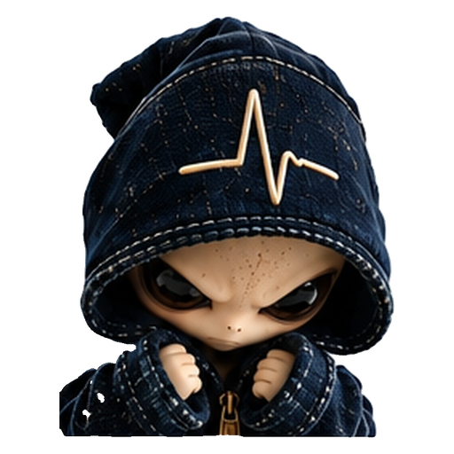
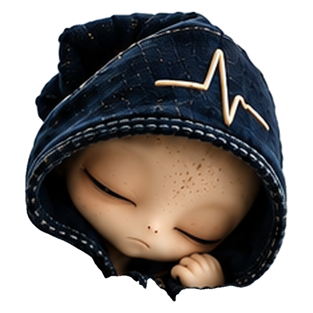
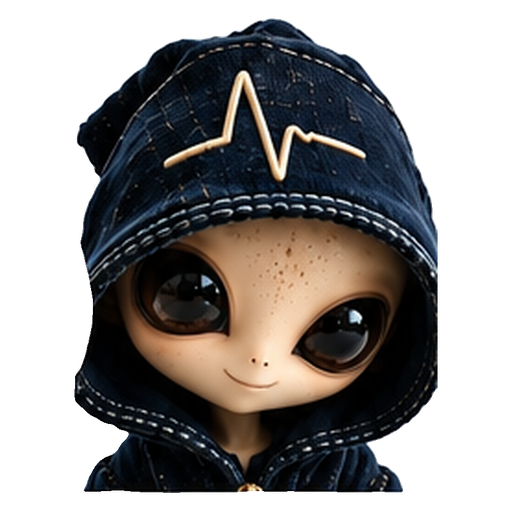
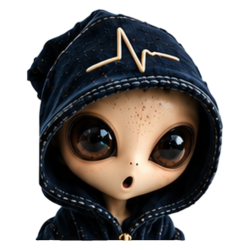
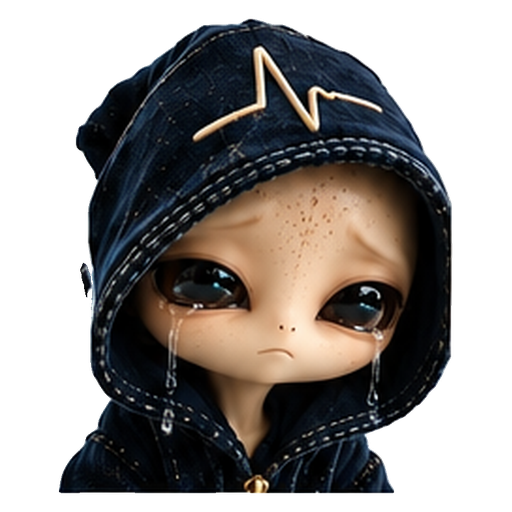
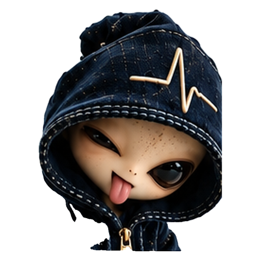
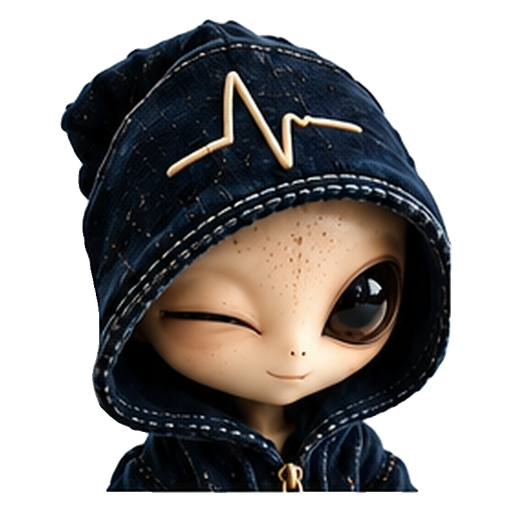
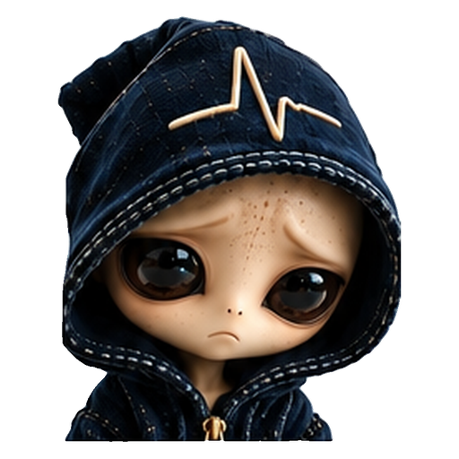


LOOPS · GIF
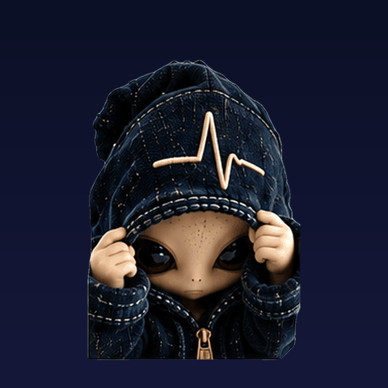
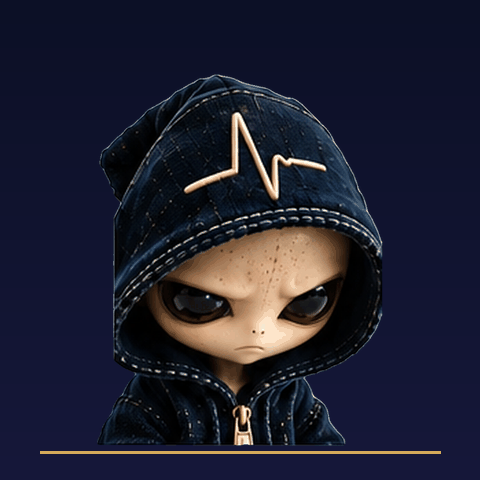
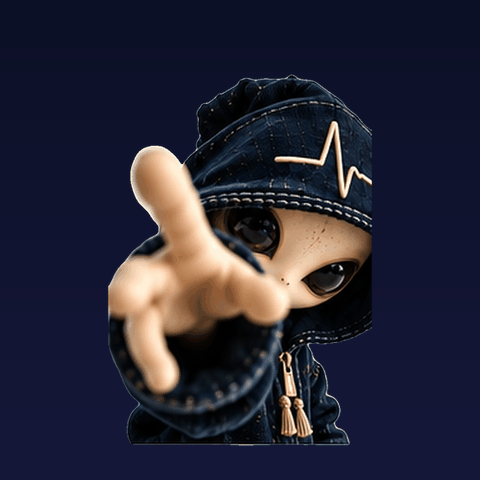
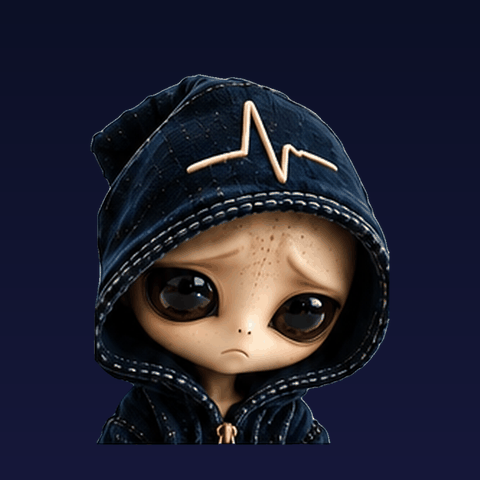
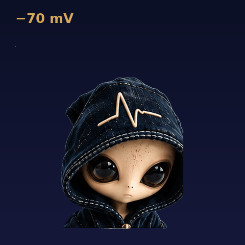
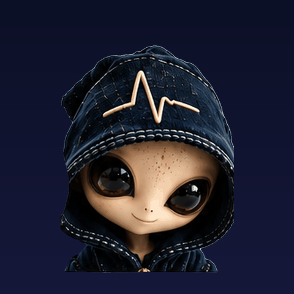